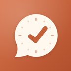

keepup
The messages and email you haven't answered, in one list.
keepup is a Mac app, with a companion iPhone app, that reads your iMessage, WhatsApp, Signal, Messenger, X, Telegram and Gmail and tells you, once or twice a day, who's waiting on you and what they need. It marks the machine mail you'd never read (receipts, alerts, newsletters) as read, so your inbox holds what matters. It never sends, deletes or answers anything: you reply in your own words, in your own apps.
Free public beta, version 0.1.1 · macOS 15 or later on Apple silicon · Getting started
How it works
- It reads, on your MacYour messages and email, from the apps and accounts you choose. Nothing is copied to a server of ours: there isn't one.
- Claude sorts themClaude Code, signed in with your own account, judges who's waiting on you and what's noise. It gets the messages to sort and nothing else.
- It tells youA brief once or twice a day on your Mac and iPhone, reminders for whoever's still waiting, and the machine mail it marked read, with Not noise for anything it got wrong.
What you need
- A Mac with Apple silicon, on macOS 15 or later, that's usually awake
- Claude Code with your own Claude plan (keepup's Setup installs it and helps you sign in)
- For email: a Gmail or Google Workspace account
- For the iPhone app: iOS 18 or later, signed in to the same iCloud account as your Mac
It runs on your Mac
keepup has no servers of its own and no accounts with its makers. Your messages stay on your Mac, except what it sends to the AI you use (Claude Code, under your own Anthropic account) to sort them, and your list in your own iCloud for the iPhone app. The privacy policy says exactly what leaves your Mac and where it goes.
How keepup uses your Google data
With your permission, keepup reads your Gmail and Google Calendar to find emails waiting on a reply and to see when a meeting has already settled a thread, and it marks the emails it judges to be noise as read (never email a person wrote to you). It doesn't compose, send or delete email, and shares it with no one but the AI you use to sort it. keepup's use of information received from Google APIs adheres to the Google API Services User Data Policy, including the Limited Use requirements. Details are in the privacy policy.
Chat networks
keepup reads WhatsApp, Signal, Messenger, X and Telegram through open-source bridges that run on your Mac and sign in as you, the way a second device would. They aren't official apps, and those networks' terms don't allow unofficial clients, so an account that uses one can be challenged, signed out, or (rarely) restricted. Each is optional, and keepup shows the risk before you connect it. iMessage and texts need no bridge: keepup reads them from the Messages app.